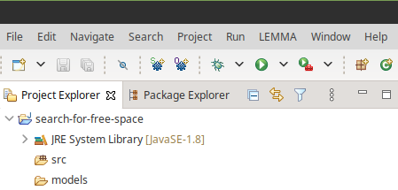
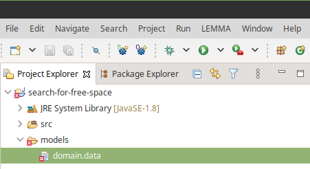
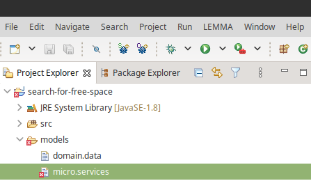
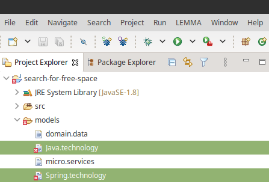
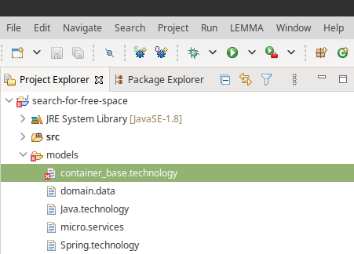
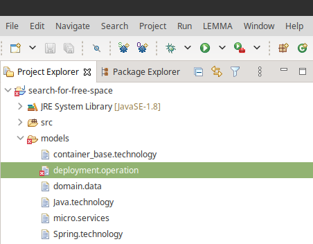

Tour
In the following, we will demonstrate some of the basic features of LEMMA regarding the construction of models for microservice architectures and their processing. To reproduce the presented modeling and processing steps, you may first want to install LEMMA on your computer.
The Park and Charge Platform Example
For the tour of LEMMA, we refer to a single microservice from an MSA1-based application that allows the management of parking spaces with capabilities for electric vehicle charging. More specifically, we will call this application the Park and Charge Platform, or short PACP.
The PACP consists of several microservices, e.g., for user management, parking
space configuration and provisioning, and parking space searching. For the tour
of LEMMA, we are going to model the domain data, API, and deployment of the
latter microservice, i.e., the SearchForFreeSpace microservice. This
microservice shall provide its clients with means to search for spare parking
spaces with electric vehicle charging capabilities in a given location.
What you will Learn During the Tour
In the following you will learn how to construct the following types of LEMMA
models for the SearchForFreeSpace microservice:
- Domain model: Defines the domain information of the microservice.
- Service model: Defines the API of the microservice.
- Operation model: Defines the deployment of the microservice.
In addition, you will receive an impression on how model processing works with LEMMA. More specifically, you will learn how to derive executable Java code from the constructed models.
The next sections will teach you how to construct the aforementioned LEMMA
models for the SearchForFreeSpace microservice by means of a
LEMMA-enabled Eclipse installation. If you do not want to
construct the models on your own, you can also
download a ZIP archive,
which includes all three models.
Step 1: Creating an Eclipse Project
In the LEMMA-enabled Eclipse installation, create a new Java
project called search-for-free-space. We will use this project
to gather all models for the SearchForFreeSpace microservice. In addition,
create a folder called models within the project.
The Project Explorer of your Eclipse workspace should now look similar to this:

Step 2: Create a Domain Model
LEMMA provides several modeling languages to express different viewpoints on a microservice architecture. A crucial viewpoint in almost every software project including microservice architecture is the domain viewpoint, for which LEMMA comprises the Domain Data Modeling Language that enables domain experts and microservice developers to collaboratively construct domain models.
LEMMA recognizes domain models in the Eclipse IDE by means of the file extension
data. For the SearchForFreeSpace microservice, we cluster related domain
data in a file called domain.data within the models folder of the previously
created search-for-free-space Eclipse project. Create this file
leveraging the Eclipse IDE. In case a dialog pops up, asking you to convert the
search-for-free-space project to an Xtext project, just confirm
it with Yes.
The Project Explorer of your Eclipse workspace should now look similar to this:

As you can see, Eclipse displays an error marker for the model. That is, because
LEMMA's
Domain Data Modeling Language
does not allow empty domain models. To fix this issue, add the following model
code to the domain.data file by double-clicking the file in Eclipse's Project
Explorer and entering the code in the text editor that just opened:
1 2 3 4 5 6 7 8 9 10 11 12 13 14 15 16 17 18 19 20 21 22 23 24 25 26 27 28 29 | |
Bounded Contexts
The
Domain Data Modeling Language
enables to organize the concepts of a microservice's domain excerpt within
contexts. You can introduce a context with the keyword context followed by the
name of the context and a pair of curly brackets. With this approach, the
example domain model for the SearchForFreeSpace microservice defines a context
called ParkingSpace. LEMMA's notion of context as a cluster for domain
concepts is inspired by the Bounded Context pattern
from Domain-driven Design (DDD) and its importance for the
tailoring of microservices' domain responsibility.
A context clusters one or more domain concepts between a pair of curly brackets. LEMMA supports several kinds of domain concepts and the above example illustrates the definition of structured and list concepts.
Structured Domain Concepts and Domain-Driven Design
A structured concept (or data structure) is introduced by the keyword
structure, followed by the name of the structure and an arbitrary number of
features. In LEMMA domain models, a feature assigns additional semantics like
patterns from tactical DDD to a domain
concept. Furthermore, a data structure consists of an arbitrary number of typed
and named data fields clustered in curly brackets. Consider the Location
structure from the example domain model above. It receives the valueObject
feature to identify it as a DDD Value Object.
Moreover, the structure consists of six data fields, which all exhibit the
immutable identifier. That is, the values of the fields remain stable after
their initialization. LEMMA supports all primitive types of Java and also treats
String as a primitive type that can store a sequence of characters of
arbitrary length. Take for example the fields latitude and street of the
Location structure, which have the types double and string, respectively.
The ParkingSpace concept is another example of a domain-specific data
structure. It receives the features aggregate and entity, and is thus a
DDD Aggregate and
DDD Entity. In DDD terms, based on this combination
of patterns, the structure of the ParkingSpace concept also specifies the
structure of the aggregate's root entity to be stored, e.g., in a database.
Like the Location concept, the ParkingSpace concept consists of six data
fields of the id field is the identifier of the root entity, and the
capacities and location fields are parts of the root entity, whose
structures are to be embedded into the root entity structure upon storage. In
addition, both fields show LEMMA's support for complex typing of data fields.
That is, next to primitive types like double and string, you can also use
domain concepts such as VehicleCounts (see below) and Location to type data
fields.
The example domain model contains a third data structure, i.e., VehicleCount,
which is a value object and consists of three primitively typed data fields. By
contrast to the fields of the Location structure, the VehicleCount fields
are mutable due to the lack of the modifier immutable.
List Type Domain Concepts
Next to data structures, the example domain model defines two list types using
the list keyword. In LEMMA, a list type specifies a sequence of one or more
data fields that can have a primitive or complex type. Both list types in the
example domain model, i.e., ParkingSpaces and VehicleCounts, have one field
(parkingSpace and vehicleCount, respectively) of a structured type
(ParkingSpace and VehicleCount, respectively).
Step 3: Create a Service Model
In this step, we use LEMMA's
Service Modeling Language
to construct a service model for the SearchForFreeSpace microservice. The
modeling language covers the concerns of microservice developers, thereby
providing a means to express the service viewpoint on a microservice
architecture.
In the models folder of the search-for-free-space Eclipse project, create a
file called micro.services so that the Project Explorer of your Eclipse
workspace looks similar to this:

As for the initial domain model constructed in
Step 2, LEMMA does not allow empty service
models and thus displays an error marker for the micro.services file. To fix
this issue, add the following service model code to the file:
1 2 3 4 5 6 7 8 9 10 11 12 13 14 15 16 17 18 19 | |
Domain Concept Imports
LEMMA's modeling languages support an import statement that enables to
integrate models for different viewpoints on a microservice architecture. These
statements always have the following syntactic form:
import [ELEMENT_TYPE] from "[MODEL_PATH]" as [ALIAS]
In the example service model, the imported [ELEMENT_TYPE] is datatypes,
which accounts for the import of domain concepts to be used as data types for
service operation parameters (see below). The example [MODEL_PATH] is
domain.data, i.e., it points to the domain model that we constructed above.
All domain concepts from the model are imported under the [ALIAS] domain.
The alias of a LEMMA import provides a shortcut to access the elements of an
imported model.
Microservice Definition
A microservice definition is introduced by an optional visibility modifier,
followed by a mandatory service type identifier, the keyword microservice,
and the fully-qualified name of the microservice.
In the example service model, the visibility modifier of the
SearchForFreeSpace microservice is public, which expresses the intent to
make the microservice available to consumers that are not part of the same
microservice architecture. Microservices without an explicit visibility modifier
receive have architecture visibility, i.e., they are visible only to
microservices that belong to the same architecture and are not to be exposed to
external consumers.
The service type identifier is functional, which marks the microservice to
fulfill a functional, usually business-oriented capability within the considered
microservice architecture. Other available type identifiers are infrastructure
(the microservice provides an infrastructure capability, e.g., monitoring) and
utility (the microservice provides a reusable utility capability that is not
motivated by only a single business case, e.g., currency conversion).
The microservice keyword determines the name of the microservice, which must
have at least one qualifying level to configure the microservice's namespace.
Qualifying levels are separated by dots (.) and, except for the last
qualifying level, determine the microservice's namespace. This mechanism in fact
follows the rules for package declaration in Java. Consequently, the
fully-qualified name of the SearchForFreeSpace microservice is
com.example.pacp.SearchForFreeSpace. It consists of the namespace
com.example.pacp and the microservice's simple name SearchForFreeSpace.
Interface Definition
In LEMMA, the definition of a microservice must cluster at least one interface in curly brackets. The modeled interfaces of a microservice specifies one of the service's APIs as a collection of one or more service operations (see below).
LEMMA provides the interface keyword to introduce an interface definition and
expects the interface's simple name after the keyword. That is, the example
service model defines an interface called SearchSpace for the
SearchForFreeSpace microservice.
Similar to microservices, interfaces can receive visibility modifiers and by
default "inherit" the visibility of their microservices. As a result, the
visibility of the SearchSpace is public as is the visibility of the
SearchForFreeSpace microservice.
Operation Definition
In LEMMA, a microservice interface must cluster at least one service operation
between curly brackets. An operation definition does not require a special
keyword. Instead, you state the name of the operation, followed by a pair of
round brackets for possible parameters and a semicolon to end the operation
definition. Thus, in the example service model the SearchSpace interface
consists of a single operation, searchFreeSpace, which has five parameters
(see below).
In addition, the
Service Modeling Language
integrates a special syntax for API operation comments that allows the
immediate documentation of an operation's purpose and can later be translated,
e.g., into OpenAPI specifications. An API operation
comment has to occur prior to an operation definition within a pair of three
consecutive dashes (---). Hence, the example searchFreeSpace receives the
API operation comment Search for a free parking space. to communicate its
intent.
Furthermore, parameters may also receive documentation as part of API operation
comments. For this purpose, LEMMA provides the built-in annotations @param
and @required to communicate the "importance" of a parameter for a service
operation. While @param documents parameter that may be empty upon operation
invocation, @required signal callers that a parameter must receive a value for
a service operation to sensibly execute. After the annotation, the name of the
parameter and its comment follow. In the example service model, we document the
purposes of both required, incoming parameters (see below) inLocation and
distance.
Parameter Definition
A modeled service operation may receive and return an arbitrary number of
parameters. A parameter definition starts with a keyword that identifies the
parameter's communication type. The sync keyword introduces parameters,
which an operation expects to receive or promises to return in a synchronous
manner. The async keyword, on the other hand, defines parameters, which an
operation expects to receive or promises to return in an asynchronous manner.
Next to a communication type, a parameter definition in LEMMA can explicitly
state the direction of a parameter, which can be incoming (in modifier),
outgoing (out modifier), or bidirectional (inout modifier).
A parameter definition is concluded by the parameter's name and its type,
separated by a colon. The type of a parameter may either be primitive type or a
domain concept imported from a domain model (see above). To reference an
imported domain concept for typing purposes, you first have to state the alias
of the import, followed by two colons (::) and the fully-qualified name of the
type within the imported domain model. The fully-qualified name of a domain
concept consists, e.g., of the concept's context and simple name, whereby the
different qualifying levels are separated by a dot.
The following table identifies the communication type, direction, and type of
each parameter of the searchFreeSpace operation from the example service model
above.
| Parameter | Communication Type | Direction | Type |
|---|---|---|---|
inLocation |
synchronous (sync) |
incoming (in) |
Location domain concept (from context ParkingSpace of imported model with alias domain) |
distance |
synchronous (sync) |
incoming (in) |
primitive type float |
freeSpaces |
synchronous (sync) |
outgoing (out) |
ParkingSpace domain concept (from context ParkingSpace of imported model with alias domain) |
allocations |
synchronous (sync) |
outgoing (out) |
VehicleCounts domain concept (from context ParkingSpace of imported model with alias domain) |
foundNone |
synchronous (sync) |
outgoing (out) |
primitive type boolean |
In addition, the foundNone parameter constitutes a fault parameter, i.e.,
the searchFreeSpace operation will use the parameter as a flag to communicate
potential errors to callers.
From the definitions of the parameters, we can phrase the purpose of the
searchFreeSpace operation in natural language as follows:
Purpose of the searchFreeSpace operation in natural language
Take a location and a distance, and return all free parking spaces and their allocations by vehicles. In case no parking spaces could be found, return an error flag.
Step 4: Enrich the Service Model with Technology Information
So far, we have used LEMMA's
Domain Data Modeling Language
and
Service Modeling Language
to construct the domain and service model of the SearchForFreeSpace
microservice. Recall that LEMMA organizes its modeling languages into different
architecture viewpoints on microservice architectures. That is, the example
domain model reifies the concepts of the domain view on the SearchForFreeSpace
microservice and the example service model represents the service view on the
microservice.
Next to domain and service characteristics, another crucial aspect of MSA is technology or, more precisely, the possibility to employ an arbitrary number of heterogeneous technologies in microservice development. In fact, technology heterogeneity may be considered one of the benefits introduced by MSA as it enables to employ the most sufficient technologies to implement a microservice. On the other hand, it can make microservices prone to technical debt and increase the learning curve for new team members.
LEMMA treats technology heterogeneity as a dedicated concern in microservice development and thus provides the Technology Modeling Language to cluster technology information in technology models that are flexibly applicable to modeled microservices.
In the following, we enrich the technology-agnostic example service model from
above with technology information for Java and the
Spring framework. While this binds the SearchForFreeSpace
microservice to a certain technology stack, it makes it also possible to later
generate executable microservice code from the model.
To extend the model of the SearchForFreeSpace microservice with technology
information, we first require applicable technology models. To this end, create
the files Java.technology and Spring.technology in the models folder of
the search-for-free-space Eclipse project so that the Project Explorer of your
Eclipse workspace looks similar to this:

Next, copy the contents of the following two listings to the corresponding technology model file.
Note
Here, we will not go into further details concerning the construction of technology models. Please refer to the user guide of the Technology Modeling Language to learn about technology model construction.
1 2 3 4 5 6 7 8 9 10 11 12 13 14 15 16 17 18 19 20 21 22 23 24 25 26 27 28 29 30 31 32 33 34 35 36 37 38 | |
1 2 3 4 5 6 7 8 9 10 11 12 13 14 15 16 17 18 19 20 21 22 23 24 25 26 27 28 29 30 31 32 33 34 35 36 37 38 39 40 41 42 43 | |
With the technology models at hand, you can now extend the example service model
and its elements with the technology information identified by the
// EXTENSION comments:
1 2 3 4 5 6 7 8 9 10 11 12 13 14 15 16 17 18 19 20 21 22 23 24 25 26 27 | |
Technology Model Imports and Applications
The example service model extensions with the numbers (1) and (2) import
the constructed technology models into the example service model. The syntax for
importing technology models into service models is almost equal to that for
importing domain models into service models (see above). Specifically, it only
differs for the element type, which is technology instead of datatypes.
Extensions (3) and (4) apply the imported technology models to the
SearchForFreeSpace microservice using the built-in annotation @technology
followed by the import aliases of the models in round brackets. The application
of technology models to microservices by means of the annotation is mandatory to
indicate that a microservice depends on a certain technology and also makes
Technology Aspects
Extensions (5) to (8) of the example service model apply technology
aspects from the imported Spring technology model to the
SearchForFreeSpace microservice's searchFreeSpace operation and some of its
parameters.
In LEMMA, a technology aspect is similar to an annotation in Java or an attribute in C# in that it enables to attach metadata to modeled elements. The syntax for aspect application follows this pattern:
[IMPORTED_TECHNOLOGY_MODEL_ALIAS]::_aspects.[ASPECT_NAME]
That is, the example service model applies two technology aspects from the
Spring technology model. More precisely, it applies the Get aspect to the
searchFreeSpace operation and the ResponseStatus aspect to the operation's
freeSpaces, allocations, and foundNone parameters. The Spring technology
model defines these aspects to make the semantics of the Java annotations
GetMapping and
ResponseStatus available to
LEMMA modelers. As a result, the searchFreeSpace operation will be invokable
by consumers using an HTTP GET request, whose outcome will be the HTTP status
OK (or 200) when the parameters freeSpaces and allocations are returned,
and 404 (or NOT FOUND) when the foundNone error flag (see above) is
returned.
In fact, the technology aspect mechanism is not constrained to technology alone. Instead, the Technology Modeling Language does not constrain the semantic scope of metadata, thereby making technology aspects a powerful feature that allows semantic enrichment of LEMMA models as required by a microservice team and its members. For instance, next to technology-related configuration metadata, technology aspects are used to integrate patterns such as CQRS and Saga with LEMMA.
Step 5: Create an Operation Model
Until now we relied on three LEMMA modeling languages, which enabled us to
express different viewpoints on the SearchForFreeSpace microservice:
| Modeling Language | Viewpoint | Relevance to SearchForFreeSpace microservice |
|---|---|---|
| Domain Data Modeling Language | Domain Viewpoint | Modeling of structured and sequential domain data based on DDD |
| Service Modeling Language | Service Viewpoint | Modeling of the microservice's API |
| Technology Modeling Language | Technology Viewpoint | Addition of technology information to the microservice |
In this section, we will use LEMMA's
Operation Modeling Language to
construct an operation model for the SearchForFreeSpace microservice. In
LEMMA, operation models specify the deployment of one or more microservices, as
well as the relevant deployment and operation infrastructure consisting of,
e.g., service discoveries, API gateways, tracing and monitoring components etc.
By contrast to service models, LEMMA does not support the technology-agnostic
modeling of operation models. Instead, elements in an operation model must
always refer to one or more technologies being imported from technology models.
This circumstance reflects the fact that the deployment and operation of a
microservice architecture is always bound to a determined set of technologies.
Consequently, we first need to create an operation-oriented technology model. To
this end, create a file called Kubernetes.technology in the models folder of
the search-for-free-space Eclipse project. The Project Explorer of your
Eclipse workspace should now look similar to this:

Next, copy the model code in the following listing expressed with LEMMA's
Technology Modeling Language
to Kubernetes.technology file.
Note
Here, we will not go into further details concerning the construction of technology models. Please refer to the user guide of the Technology Modeling Language to learn about technology model construction.
1 2 3 4 5 6 7 8 9 10 11 12 | |
Now, in the models folder of the search-for-free-space Eclipse project,
create a file called deployment.operation so that the Project Explorer of
your Eclipse workspace looks similar to this:

The deployment.operation file shall store the operation model, which specifies
the deployment of the SearchForFreeSpace microservice in LEMMA's
Operation Modeling Language.
However, as in the previous steps, LEMMA recognizes empty operation models as
erroneous. To fix this issue, enter the following model code in the
deployment.operation file:
1 2 3 4 5 6 7 8 9 10 11 12 13 14 15 16 17 18 | |
Technology and Microservice Imports
As already mentioned, LEMMA operation models are never technology-agnostic and
thus must rely on technologies captured in technology models. Hence, an
operation model must import one or more technology models. The operation model
for the SearchForFreeSpace microservice first imports the model in the
Kubernetes.technology file, which we have created above. Next, it also imports
the Spring.technology model from
Step 4. Notice
that for technology model imports the
Operation Modeling Language
relies on the same syntactic construct as the
Service Modeling Language:
import technology from "[MODEL_PATH]" as [ALIAS]
In case an operation model shall specify the deployment of a microservice or its
usage of infrastructure components, the model must also import the corresponding
service model. In the above example code, the operation model imports the
SearchForFreeSpace microservice from the service model in the file
micro.services (cf. Steps 3 and
4). To this end,
the operation model employs the syntactic form of LEMMA's import statement
with the element type microservices:
import microservices from "[MODEL_PATH]" as [ALIAS]
Container Definition
LEMMA relies on the notion of
container-based-deployment to specify the
deployment of a microservice. More precisely, the
Operation Modeling Language
provides the container keyword, which expects the name of the container, a
deployment technology, and one or more imported microservices to be deployed,
followed by a pair of curly brackets:
container [CONTAINER_NAME]
deployment technology [IMPORTED_DEPLOYMENT_TECHNOLOGY]
deploys [IMPORTED_MICROSERVICE1] (, [IMPORTED_MICROSERVICEx])* { ... }
The deployment technology of a container must originate from an imported
technology model that is assigned to the container using the built-in
@technology annotation. That is, in the above example operation model, the
container with the name SearchForFreeServiceContainer receives the imported
technologies Spring and Kubernetes. The former originates from the
Spring.technology model constructed in
Step 4 and the
latter refers to the technology model file Kubernetes.technology, which we
constructed at the beginning of the current step. While we require the Spring
technology to configure the endpoints of the container (see below), we use the
Kubernetes technology to determine the deployment technology of the
SearchForFreeServiceContainer using the following pattern to refer to the
deployment technology imported from the Kubernetes.technology model:
[IMPORTED_TECHNOLOGY_MODEL_ALIAS]::_deployment.[TECHNOLOGY_NAME]
Notice that the syntax for referencing imported deployment technologies is
basically consistent with the syntax for referencing imported technology aspects
(cf. Step 4),
but expects the namespace _deployment instead of _aspects. You can read more
about technology namespaces in the
Technology Modeling Language
chapter.
After its deployment technology, a modeled container must state the deployed
microservices using the deploys directive. Microservices originate from
imported service models and thus we refer to them in operation models using the
same syntactic form as for typing microservice operation parameters with
imported domain concepts (cf. Step 3):
[IMPORTED_SERVICE_MODEL_ALIAS]::[FULLY_QUALIFIED_MICROSERVICE_NAME]
Since the SearchForFreeServiceContainer container shall deploy the
SearchForFreeSpace microservice from the micro.services file (cf.
Steps 3 and
4), which we
imported with the alias SearchForFreeService, we refer to the service for its
deployment via the example operation model as
SearchForFreeService::com.example.pacp.SearchForFreeSpace.
Container Configuration
LEMMA allows the configuration of containers and microservice deployments within
the curly brackets of a container definition. In the example operation model,
we configure the container within the default values section. The
configuration values in this section account for all microservices that a
container deploys. However, it is also possible to only configure a selected
microservice or overwrite the default configuration values for a selected
microservice. You can learn more about service-specific container configurations
in the
Operation Modeling Language
chapter.
Basically, container configurations consist of value assignments to
technology-specific configuration properties. In the example operation model
above, we specify the values SearchForFreeService and 8080 for the
springApplicationName and serverPort properties from the
Kubernetes.technology model. Notice that the semantics of the configuration
properties always depend on the technology model. In this case, the
Kubernetes.technology model uses the properties to extend the configuration of
Spring-based microservices with deployment-relevant information.
Next to configuration properties, container configurations may contain a
basic endpoints section. It allows for determination of a container's
endpoints. In LEMMA, endpoints are combinations of communication protocols
specified in technology models, and one or more addresses. The example operation
model above defines an endpoint for RESTful HTTP interaction (represented by the
rest protocol from the Spring.technology model; cf.
Step 4), which
is reachable at the physical address localhost:8080.
-
MSA: The Microservice Architecture style. ↩